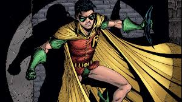

Robin
Robin est bien plus qu’un simple acolyte de Batman : c’est un symbole d’espoir et un héritier du combat contre le crime dans l’univers de Gotham. Derrière ce costume coloré se cache une histoire profondément humaine, marquée par la tragédie, la rédemption, et une constante quête d’identité. L’histoire de Robin, sous ses multiples incarnations, est une exploration de ce que signifie grandir dans l’ombre d’une légende comme Batman, tout en trouvant sa propre voie.
Traits communs du personnage de Robin :
.jpg)
Couleurs emblématiques : Rouge, jaune et vert (costume classique).
Symbolique : Robin représente souvent l’espoir et l’héritage dans l’univers sombre de Gotham.
Compétences : Expert en arts martiaux, acrobatie, et maîtrise des gadgets.
Lien avec Batman : Chacun des Robins, malgré des différences de caractère, sert à enrichir et humaniser la complexité du personnage de Batman.
Chaque Robin apporte une perspective différente, faisant du rôle non seulement un simple acolyte mais un pilier central de l’univers Batman.
Qu'est devenu le personnage de Robin ?
Actuellement, Robin (Damian Wayne) joue un rôle central dans le nouvel arc narratif des comics *Batman and Robin*. Dans l'édition de novembre 2024, Bruce Wayne et Damian font face à une menace mystérieuse nommée Memento, qui s'en prend à leur passé et les pousse à agir sans leurs gadgets habituels. Ce récit met en lumière la relation complexe entre le père et le fils, tout en explorant les défis liés à l'identité de Damian en tant que Robin et héritier de la lignée Wayne. Les intrigues actuelles construisent également une réflexion sur son avenir au sein de la Bat-Family et de Gotham.